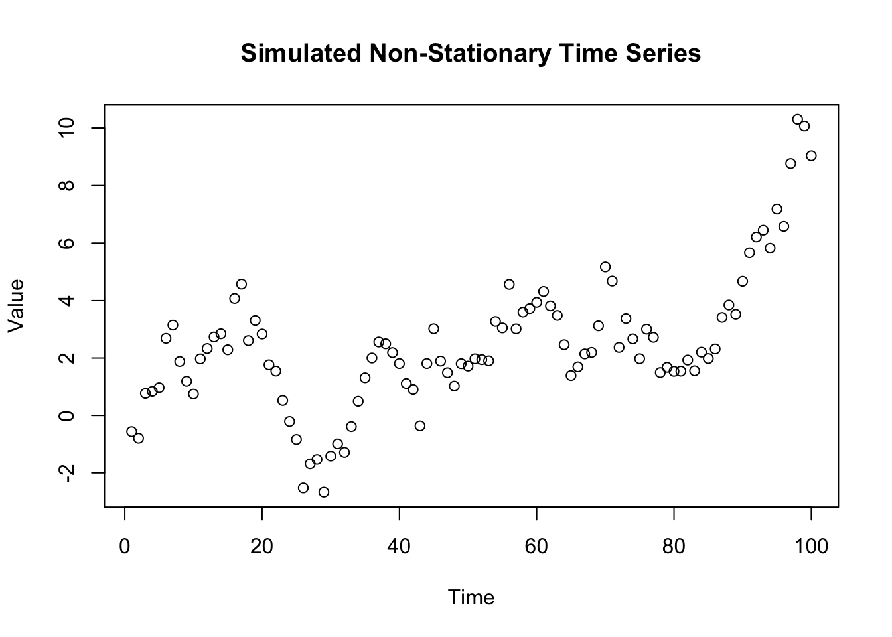

Financial time series data encapsulates the essence of the financial world’s dynamism, representing a sequence of quantifiable financial events spread across time intervals. This data type is indispensable in the realm of finance, serving as a critical tool for analyzing and interpreting market movements, economic indicators, and financial trends. For analysts, investors, economists, and policy makers, understanding financial time series is not just beneficial – it’s crucial for informed decision-making and strategic planning in the ever-evolving landscape of financial markets.
5.1 What is Financial Time Series Data?
At its core, financial time series data is a collection of observations recorded sequentially over time. It encompasses a broad spectrum of data types, including daily stock prices, monthly interest rates, annual GDP figures, and more. Each data point in a time series bears a timestamp, reflecting its unique position in the temporal sequence. This inherent time-dependency is what sets financial time series apart from other statistical data, introducing complexities like trends, seasonality, and autocorrelation.
5.2 Role in Economic Forecasting
Time series analysis is the linchpin of economic forecasting. By dissecting historical data, analysts unlock patterns and rhythms – trends, seasonal effects, and cycles. These insights are instrumental in projecting future economic scenarios, informing decisions in areas like portfolio management, risk mitigation, and economic policy development.
5.3 Application in Financial Markets
The financial markets are a fertile ground for the application of time series analysis. Techniques like ARIMA modeling, volatility forecasting, and cointegration analysis are employed to predict stock prices, evaluate risks, and unearth trading signals. Traders scrutinize past price trajectories to anticipate future movements, while risk managers use time series data to gauge market volatility and shield against potential downturns.
5.4 Importance in Investment Strategy
Time series analysis is a cornerstone of modern investment strategy. Investors and portfolio managers rely on these analyses to track market trends, gauge asset performance, and time their buy-and-sell decisions. Sophisticated techniques like GARCH models for volatility forecasting and VAR models for understanding the dynamic interplay between multiple financial variables are integral in shaping well-informed, resilient investment portfolios.
5.5 Practical Illustration with R
To concretize these concepts, let’s consider a practical example using R, a powerful tool for statistical computing and graphics, widely used in financial econometrics.
Suppose we want to analyze the daily closing prices of a stock (e.g., Apple Inc.). We can employ time series models to forecast future prices, assess volatility, or identify trends.
# R Example: Time Series Analysis of Stock Priceslibrary(quantmod)
Loading required package: xts
Loading required package: zoo
Attaching package: 'zoo'
The following objects are masked from 'package:base':
as.Date, as.Date.numeric
Loading required package: TTR
Registered S3 method overwritten by 'quantmod':
method from
as.zoo.data.frame zoo
# Fetching stock datagetSymbols("AAPL", src ="yahoo", from ="2020-01-01", to ="2023-12-31")
[1] "AAPL"
# Analyzing the closing pricesaapl_close <-Cl(AAPL)# Plotting the closing pricesplot(aapl_close, main ="AAPL Closing Prices", col ="blue")
# Using a simple time series model - Moving Averageaapl_ma <-rollmean(aapl_close, k =50, fill =NA)lines(aapl_ma, col ="red")
# More advanced analysis - ARIMA modellibrary(forecast)aapl_arima <-auto.arima(aapl_close)forecast_aapl <-forecast(aapl_arima, h =30)plot(forecast_aapl)
In this R script, we first import Apple’s stock data using the quantmod package. We then plot the closing prices to visualize the data. A simple moving average is applied to smooth out short-term fluctuations and highlight longer-term trends. Finally, an ARIMA (AutoRegressive Integrated Moving Average) model is fitted to the data, offering a more sophisticated forecasting tool. The forecast function is used to predict future stock prices, which can be invaluable for investment decision-making.
5.6 Challenges and Considerations
While financial time series analysis provides powerful insights, it comes with challenges. Financial markets are influenced by a myriad of factors - economic indicators, political events, investor sentiment - making modeling and prediction complex. Analysts must be wary of overfitting models and remain vigilant to changing market dynamics. Moreover, the assumption of stationarity in time series data often requires careful examination and potential transformation of the data.
5.7 Conclusion
Financial time series data is a gateway to deeper insights into the financial universe. Its analysis, through a blend of statistical techniques and domain expertise, equips finance professionals with the tools to navigate the complexities of financial markets. From predicting stock prices to understanding economic trends, time series analysis is an indispensable part of financial decision-making. Through practical application, like the R examples provided, analysts can transform raw data into actionable insights, driving forward-thinking strategies in the financial sector.
In this chapter, we will delve deeper into the methodologies and tools of financial time series analysis. We will explore various models, from simple moving averages to complex ARIMA and GARCH models, and discuss their applications in real-world financial scenarios. The goal is to equip readers with a comprehensive understanding of time series analysis, enabling them to apply these concepts effectively in their professional endeavors in finance.
6 Characteristics of Financial Time Series Data
Financial time series data exhibits unique characteristics that set it apart from other types of data. Understanding these characteristics is crucial for anyone looking to analyze or model financial markets. These features not only define the behavior of financial data but also guide the selection of appropriate analytical methods.
6.1 Volatility Clustering
One of the most notable features of financial time series data is volatility clustering. This phenomenon refers to the tendency for periods of high volatility to be followed by more high volatility periods, and low volatility periods to be followed by more low volatility periods. This characteristic is particularly evident in stock market data, where large changes in prices are often followed by similar-sized changes.
6.2 Leverage Effects
Leverage effects are observed when negative asset returns are associated with an increase in volatility, more than positive returns of the same magnitude. This asymmetric volatility is crucial in risk management and derivative pricing. It challenges the assumption of constant volatility in traditional financial models.
6.3 Heavy Tails and Kurtosis
Financial time series often exhibit heavy tails and excess kurtosis compared to a normal distribution. This means there is a higher likelihood of observing extreme values. Understanding this aspect is important for risk management, as it impacts the prediction of rare, extreme events, such as financial crises or market crashes.
6.4 Mean Reversion
Mean reversion is the tendency of a financial variable to return to its historical mean over time. This characteristic is often used in various trading strategies, where it’s assumed that prices or returns will eventually move back towards the mean or average level.
6.5 Non-Stationarity
Financial time series data is typically non-stationary, meaning its statistical properties change over time. This non-stationarity can be in the form of a changing mean or variance. It poses a significant challenge for traditional time series analysis, as most statistical methods assume stationarity.
In summary, the distinct characteristics of financial time series data, including volatility clustering, leverage effects, heavy tails, mean reversion, and non-stationarity, require specialized analytical techniques. Recognizing and understanding these features is essential for effective modeling and forecasting in finance.
7 Types of Financial Data
Financial data comes in various forms, each serving different purposes and offering unique insights into financial markets. Understanding the different types of financial data is crucial for effective analysis and interpretation. This section highlights the primary types of financial data encountered in time series analysis.
7.0.1 Stocks
Definition: Stock data represents the ownership shares of companies and is one of the most commonly analyzed forms of financial data.
Characteristics: Includes price data (open, high, low, close), volume, and dividends.
Usage: Used for analyzing company performance, market trends, and for developing trading strategies.
7.0.2 Bonds
Definition: Bond data relates to fixed-income securities, representing debt obligations by entities such as governments or corporations.
Characteristics: Includes yield, maturity, coupon rate, and credit ratings.
Usage: Important for assessing risk and return in fixed-income investments and understanding economic conditions.
7.0.3 Derivatives
Definition: Derivatives are financial instruments whose value is derived from underlying assets like stocks, bonds, commodities, or indices.
Characteristics: Includes options (calls and puts), futures, and swaps.
Usage: Used for hedging risk, speculating, and arbitrage opportunities.
7.0.4 Forex (Foreign Exchange)
Definition: Forex data involves currency exchange rates.
Characteristics: Highly liquid, influenced by global economic factors, and trades 24 hours a day.
Usage: Critical for international financial operations, currency risk management, and global investment strategies.
7.0.5 Commodities
Definition: Commodity data includes information on raw materials and agricultural products.
Characteristics: Includes prices of oil, gold, agricultural products, etc. Subject to supply and demand dynamics.
Usage: Important for understanding economic cycles, inflation, and for diversification in investment portfolios.
7.0.6 Data Frequency
Explanation: Financial data can be categorized based on the frequency of observation: high-frequency (intraday), daily, weekly, monthly, or quarterly.
Relevance: The choice of frequency has implications for the type of analysis conducted and the models used.
In this course, we will explore these various types of financial data, understanding their unique characteristics and how they can be analyzed effectively using time series econometric techniques.
7.1 Time Series Components
Understanding the components of a time series is crucial in financial data analysis. A time series can be decomposed into several systematic and unsystematic components, each representing different aspects of the data’s behavior over time. This section outlines these components and their relevance in financial time series.
7.1.1 Trend
Definition: The trend component of a time series represents the long-term progression of the series. In financial data, this could be a gradual increase in a stock’s average price due to the company’s growth.
Identification: Identified using methods like moving averages or smoothing techniques.
Significance: Trends are important for identifying long-term investment opportunities or market directions.
7.1.2 Seasonality
Definition: Seasonality refers to the regular and predictable patterns that repeat over a known period, such as quarterly earnings reports or holiday shopping seasons affecting stock prices.
Identification: Seasonal patterns can be detected using methods like seasonal decomposition or Fourier analysis.
Significance: Recognizing seasonal patterns helps in making short-term predictions and adjusting trading strategies accordingly.
7.1.3 Cyclicality
Definition: Cyclical components are fluctuations occurring at irregular intervals, influenced by economic cycles or business conditions.
Identification: Cyclical changes are often identified through spectral analysis or business cycle analysis.
Significance: Understanding cyclicality aids in preparing for potential market changes during different economic phases.
7.1.4 Irregular (Random) Component
Definition: This component consists of random, unpredictable variations in the time series. In finance, these could be unexpected market events or anomalies.
Identification: The irregular component is what remains after the trend, seasonal, and cyclical components have been accounted for.
Significance: The irregular component is crucial for risk management and developing strategies to mitigate unexpected market movements.
7.1.5 Combining Components in Financial Analysis
Approach: In practice, these components are often modeled together to provide a comprehensive analysis of financial time series data.
Application: For instance, a stock’s price movement could be analyzed in terms of its long-term trend (growth), seasonal patterns (quarterly earnings impact), and cyclical influences (economic cycles), along with random shocks (news events).
Understanding these components is the first step in any time series analysis, forming the basis for more complex models and forecasts in financial data analysis.
7.2 Simulation excercise
7.3 Time Series Components
Understanding the components of a time series is crucial in financial data analysis. A time series can be decomposed into several systematic and unsystematic components, each representing different aspects of the data’s behavior over time. This section outlines these components and their relevance in financial time series, accompanied by a simulated R example.
7.3.1 R Code for Simulating Time Series Data
# Install and load necessary packages#install.packages("ggplot2")library(ggplot2)# Time variabletime <-1:120# Representing 120 months (10 years)# Simulate Trend componenttrend <-0.05* time# Simulate Seasonal componentseasonality <-sin(pi * time /6) +cos(pi * time /12)# Simulate Cyclical componentcycle <-2*sin(pi * time /18)# Simulate Irregular componentset.seed(123) # For reproducibilityirregular <-rnorm(120, mean =0, sd =0.5)# Combine all componentssimulated_ts <- trend + seasonality + cycle + irregular# Create a dataframe for plottingdf <-data.frame(time = time, series = simulated_ts)# Plotggplot(df, aes(x = time, y = series)) +geom_line() +ggtitle("Simulated Time Series with Trend, Seasonality, Cyclical, and Irregular Components") +xlab("Time (Months)") +ylab("Value")
7.3.2 Explanation of Simulated Components
Trend: Represented by a linearly increasing function over time.
Seasonality: Simulated using sine and cosine functions to create regular, predictable patterns.
Cyclicality: Represented by a longer period sine function, indicating less frequent fluctuations.
Irregular Component: Random noise added to the series, simulating unexpected variations.
The resulting plot from this R code will show how these components interact to form a complex time series. This simulation helps in visualizing and understanding the distinct parts that make up financial time series data.
Your turn
Can you plot the components seperately?
7.4 Stationarity and Unit Roots in Financial Time Series
In financial time series analysis, understanding the concepts of stationarity and unit roots is fundamental. These concepts are critical in selecting appropriate models for analysis and ensuring the reliability of statistical inferences.
7.4.1 Stationarity
Definition: A time series is said to be stationary if its statistical properties such as mean, variance, and autocorrelation are constant over time. In finance, this implies that the time series does not evolve in a predictable manner over time.
Importance: Stationarity is a key assumption in many time series models. Non-stationary data can lead to spurious results in statistical tests and forecasts.
Testing for Stationarity: Common tests include the Augmented Dickey-Fuller (ADF) test and the Kwiatkowski-Phillips-Schmidt-Shin (KPSS) test.
7.4.2 Unit Roots
Definition: A unit root is a characteristic of a time series that makes it non-stationary. Presence of a unit root indicates that the time series is subject to random walks or drifts.
Detection: Unit roots can be detected using tests such as the ADF test, where the null hypothesis is that the time series has a unit root.
Implications: Time series with unit roots require differencing or other transformations to achieve stationarity before further analysis.
7.4.3 R Code Example for Stationarity Testing
# Install and load necessary packages#install.packages("tseries")library(tseries)# Example: Simulated non-stationary time seriesset.seed(123)non_stationary_ts <-cumsum(rnorm(100))# Augmented Dickey-Fuller Testadf.test(non_stationary_ts)
Augmented Dickey-Fuller Test
data: non_stationary_ts
Dickey-Fuller = -1.8871, Lag order = 4, p-value = 0.6234
alternative hypothesis: stationary
# Plot the time seriesplot(non_stationary_ts, main ="Simulated Non-Stationary Time Series", ylab ="Value", xlab ="Time")
Certainly! The next section in your course outline could focus on “Linear Time Series Models,” a critical area in financial time series analysis. This section will be more extensive, covering several key models and their applications. Here’s the markdown-formatted content for inclusion in your Quarto notebook:
7.5 Linear Time Series Models
Linear time series models are foundational in financial data analysis. They provide a basis for understanding and forecasting financial time series data. This section covers several essential linear models, their characteristics, and their applications in finance.
7.5.1 Autoregressive (AR) Models
Definition: An AR model is a linear model where the current value of the series is based on its previous values. The AR model of order ( p ) (AR(p)) is defined as ( X_t = c + *1 X{t-1} + *2 X{t-2} + … + *p X*{t-p} + _t ), where ( _t ) is white noise.
Application: Useful in modeling and forecasting stock prices or economic indicators where the future value is a linear combination of past values.
7.5.2 Moving Average (MA) Models
Definition: The MA model is another linear time series model where the current value of the series is a linear function of past error terms. The MA model of order ( q ) (MA(q)) is given by ( X_t = + _t + *1* + *2* + … + *q* ).
Application: MA models are used in scenarios where the series is thought to be influenced by shock events, such as sudden financial market movements.
7.5.3 Autoregressive Moving Average (ARMA) Models
Definition: ARMA models combine the AR and MA models and are defined as ARMA(p, q). This model incorporates both past values and past error terms.
Application: ARMA models are well-suited for short-term forecasting in stable financial markets without long-term trends or seasonality.
7.5.4 Autoregressive Integrated Moving Average (ARIMA) Models
Definition: The ARIMA model extends the ARMA model by including differencing to make the time series stationary. An ARIMA model is denoted as ARIMA(p, d, q), where ( d ) is the degree of differencing.
Application: Widely used for forecasting stock prices, economic indicators, and other financial time series data that exhibit non-stationarity.
7.5.5 Seasonal ARIMA (SARIMA) Models
Definition: SARIMA models extend ARIMA by accounting for seasonality. A SARIMA model is denoted as SARIMA(p, d, q)(P, D, Q)s, where ( P, D, Q ) represent the seasonal components of the model and ( s ) is the length of the season.
Application: Useful for modeling and forecasting seasonal financial data like quarterly sales or seasonal commodity prices.
7.5.6 R Code Example for ARIMA Model
library(forecast)# Example: Simulate an ARIMA processset.seed(123)simulated_arima <-arima.sim(model =list(order =c(1, 1, 1), ar =0.5, ma =0.5), n =100)# Fit an ARIMA modelfit_arima <-auto.arima(simulated_arima)# Forecastingforecast_arima <-forecast(fit_arima, h =10)# Plot the forecastplot(forecast_arima)

7.5.7 Explanation of the R Code
The forecast package is used for fitting and forecasting ARIMA models.
arima.sim function simulates a time series data following an ARIMA process.
auto.arima automatically selects the best ARIMA model for the given time series.
The forecast is then plotted to visualize the future values as predicted by the model.
Understanding and applying these linear time series models are pivotal in financial time series analysis, as they provide essential tools for forecasting and analyzing financial market data.
Continuing with the detailed sections for your course, the next important topic in financial time series analysis is “Volatility Models.” Here’s an extensive markdown-formatted content on this topic for your Quarto notebook:
7.6 Volatility Models in Financial Time Series
Volatility models are crucial in financial time series analysis, particularly in understanding and forecasting the variability of asset prices and returns. This section delves into key volatility models and their applications in finance.
Definition: ARCH models, introduced by Engle (1982), are used to model and forecast time-varying volatility. The basic idea is that the current period’s volatility is a function of the previous period’s squared residuals. The ARCH model of order ( q ) is given by ( _t^2 = _0 + *1* ^2 + … + *q* ^2 ).
Application: ARCH models are widely used in the analysis of financial market volatility, particularly for assets like stocks and foreign exchange.
7.6.2 Generalized ARCH (GARCH) Models
Definition: The GARCH model, an extension of the ARCH model introduced by Bollerslev (1986), incorporates both ARCH and moving average components. A GARCH model of order (p, q) is defined as ( *t^2 =* *0 +* ^{p} *i* ^2 + ^{q} *j* ^2 ).
Application: GARCH models are fundamental in financial econometrics for modeling and forecasting the volatility of returns for various financial instruments.
7.6.3 Exponential GARCH (EGARCH)
Definition: The EGARCH model, introduced by Nelson (1991), is a variant of the GARCH model that allows for asymmetric responses of volatility to positive and negative shocks. It is expressed in terms of the logarithm of the variance, allowing for negative coefficients and ensuring that the conditional variance is always positive.
Application: EGARCH is particularly useful for financial data exhibiting leverage effects, where negative and positive shocks have different impacts on volatility.
7.6.4 Integrated GARCH (IGARCH)
Definition: IGARCH models, a special case of GARCH, assume that the effects of past variances are persistent over time. This model is often used when the sum of the GARCH and ARCH coefficients is close to one, indicating a high level of persistence in volatility.
Application: Commonly applied in long-term financial risk modeling and for assets exhibiting persistent volatility over time.
7.6.5 R Code Example for GARCH Model
# Install and load necessary packageslibrary(rugarch)
Loading required package: parallel
Attaching package: 'rugarch'
The following object is masked from 'package:stats':
sigma
# Use European DAX index data data("EuStockMarkets")spec <-ugarchspec(variance.model =list(model ="sGARCH", garchOrder =c(1, 1)),mean.model =list(armaOrder =c(0, 0), include.mean =TRUE),distribution.model ="norm")fit <-ugarchfit(spec = spec, data = EuStockMarkets[, "DAX"])# Summary of the fitted modelsummary(fit)
The rugarch package is used for modeling and forecasting using various GARCH models.
ugarchsim simulates a time series following a GARCH process.
ugarchfit fits a GARCH model to the simulated data, and the model’s summary provides insights into the volatility dynamics.
ugarchforecast is used for forecasting future volatility, and the plot visualizes the forecasted volatility.
Volatility models like ARCH, GARCH, EGARCH, and IGARCH play a pivotal role in financial econometrics, enabling analysts to understand and predict the complex nature of financial market volatility.
This section provides an in-depth overview of various volatility models, their theoretical foundations, and practical applications, along with an R example for GARCH modeling.
Continuing with the course material, the next significant topic is “Multivariate Time Series Analysis.” This section is particularly important in finance for understanding the relationships between multiple financial variables. Here’s an extended markdown-formatted content for this topic:
7.7 Multivariate Time Series Analysis in Finance
Multivariate time series analysis involves the study of simultaneous time series. It’s crucial for understanding the dynamic relationships between multiple financial variables and is widely used in risk management, asset pricing, and macroeconomic forecasting.
7.7.1 Vector Autoregression (VAR) Models
Definition: VAR models are an extension of univariate autoregression (AR) models to multivariate time series data. A VAR model captures the linear interdependencies among multiple time series. For a VAR model of order ( p ), the value of each variable at time ( t ) is a linear function of its own previous values and the past values of all other variables in the system.
Application: Commonly used in analyzing and forecasting economic indicators and understanding the impact of shocks in one variable on others.
7.7.2 Cointegration and Error Correction Models (ECM)
Definition: When non-stationary time series variables are combined in a way that results in a stationary series, they are said to be cointegrated. Error Correction Models (ECM) are used to model the short-term adjustments that return the cointegrated series to long-term equilibrium after a shock.
Application: ECMs are essential in financial econometrics for modeling and forecasting relationships between long-term economic variables, such as interest rates and economic growth.
7.7.3 Vector Error Correction Models (VECM)
Definition: VECM is a special form of a VAR model that is used for cointegrated time series. It combines the concepts of differencing for stationarity with error correction to model the long-term relationship.
Application: VECMs are particularly useful in modeling and forecasting financial time series that are cointegrated, like pairs trading in finance.
7.7.4 Granger Causality Tests
Definition: Granger causality tests are used to determine if one time series can be used to forecast another. Note that ‘causality’ in this context does not imply a true causal relationship, but rather a predictive capability.
Application: Widely used to test for lead-lag relationships between financial variables, such as stock prices and economic indicators.
7.7.5 State-Space Models and the Kalman Filter
Definition: State-space models are a class of models that use observed and unobserved variables to model time series data. The Kalman filter is an algorithm used in state-space models for estimating the hidden states in the model.
Application: Useful in high-frequency trading and for modeling time-varying relationships in finance, such as dynamic risk factors in asset pricing.
7.7.6 R Code Example for VAR Model
# Install and load necessary packages#install.packages("vars")library(vars)
Loading required package: MASS
Loading required package: strucchange
Loading required package: sandwich
Loading required package: urca
Loading required package: lmtest
# Example: Simulate two related time seriesset.seed(123)ts1 <-cumsum(rnorm(100))ts2 <-0.5* ts1 +rnorm(100)# Combine into a multivariate time seriesmts <-cbind(ts1, ts2)# Fit a VAR modelfit_var <-VAR(mts, p =2)# Summary of the fitted VAR modelsummary(fit_var)
# Forecasting with VARforecast_var <-predict(fit_var, n.ahead =10)plot(forecast_var)
7.7.7 Explanation of the R Code
The vars package provides functions for VAR model estimation and diagnostics.
Two simulated time series (ts1 and ts2) are generated and combined.
VAR function fits a VAR model to the multivariate time series.
The summary of the model provides insights into the relationships between the variables.
The forecast from the VAR model is plotted to visualize future values.
Multivariate time series models like VAR, VECM, and state-space models offer powerful tools for analyzing complex relationships in financial data and are essential for advanced financial analytics.
Continuing the course content, the next crucial topic is “Forecasting Financial Time Series.” This section is fundamental for students to learn how to predict future financial trends based on historical data. Here’s a comprehensive markdown-formatted content for this topic:
7.8 Forecasting Financial Time Series
Forecasting is a key aspect of financial time series analysis, enabling analysts and investors to make informed decisions based on predictions of future market trends and behaviors. This section covers key forecasting techniques and their application in financial data.
7.8.1 Forecasting Techniques
Overview: Forecasting in financial time series involves using historical data to predict future values. Techniques range from simple moving averages to complex machine learning algorithms.
Time Series Decomposition: Involves separating a time series into trend, seasonality, and residual components, and forecasting each component separately.
Exponential Smoothing: A family of forecasting methods that apply weighted averages of past observations, where the weights decrease exponentially over time.
ARIMA/SARIMA Models: These models are among the most commonly used forecasting methods in finance, especially for time series that exhibit non-stationarity or seasonality.
7.8.2 Model Evaluation and Selection
Importance: Accurate model selection is crucial for reliable forecasts. It involves comparing different models based on their performance metrics.
Performance Metrics: Common metrics include Mean Absolute Error (MAE), Root Mean Squared Error (RMSE), and Akaike Information Criterion (AIC).
Cross-Validation: Time series cross-validation is used to assess the predictive performance of a model on a validation set.
7.8.3 Practical Considerations in Forecasting
Data Preprocessing: Ensuring data quality and relevance, handling missing values, and considering the impact of outliers.
Economic and Market Conditions: Awareness of current economic and market trends that could impact the forecast.
Risk Assessment: Understanding the uncertainties and risks associated with forecasts.
7.8.4 R Code Example for Time Series Forecasting
# Install and load necessary packageslibrary(forecast)# Example: Simulated time series dataset.seed(123)ts_data <-ts(rnorm(120, mean =100, sd =10), frequency =12)# Fit an ARIMA modelfit_arima <-auto.arima(ts_data)# Forecast future valuesforecast_values <-forecast(fit_arima, h =12)# Plot the forecastplot(forecast_values)
7.8.5 Explanation of the R Code
The forecast package in R is a versatile tool for fitting and forecasting time series data.
auto.arima automatically selects the best fitting ARIMA model for the given time series.
The forecast function is used to predict future values based on the fitted model.
The resulting plot shows the forecast along with confidence intervals, providing a visual representation of future trends and the uncertainty around these predictions.
Forecasting financial time series is a blend of art and science, requiring not only technical expertise in statistical methods but also a keen understanding of financial markets and economic conditions.
7.9 Introduction to Random Walks in Financial Time Series
7.9.0.1 The Concept of a Random Walk
A random walk is a statistical model used to represent the seemingly random movements observed in financial markets. In its simplest form, a random walk suggests that the future path of the price of a financial asset (like a stock or a bond) is unpredictable based on its past movements. The theory posits that price changes are independent of each other and follow a predictable statistical pattern.
7.9.0.2 Key Characteristics of Random Walks
Independent and Identically Distributed Steps: In a random walk model, each step or price change is independent of the previous one, meaning past movements do not influence future movements.
Stochastic Process: The random walk is a type of stochastic process, where the next value in the series is determined by both a random component (such as market sentiment) and a deterministic component (like a drift term representing average return).
Drift and Volatility: The model often includes a ‘drift’ term, which represents the average expected return, and a ‘volatility’ term, which captures the standard deviation of returns, reflecting the risk or uncertainty.
7.9.0.3 Random Walks in Financial Markets
In finance, the random walk hypothesis is closely linked to the efficient market hypothesis, which suggests that asset prices fully reflect all available information. According to this theory, it’s impossible to consistently outperform the market through any analysis (technical or fundamental), as price changes are essentially random.
7.9.0.4 Implications
Price Forecasting: Under the random walk model, forecasting future prices based on historical price data is deemed futile.
Investment Strategies: This theory supports passive investment strategies over active trading, as it implies that exploiting market inefficiencies for consistent gains is not feasible in the long term.
Risk Management: Understanding the random nature of price movements is crucial for risk management in portfolio construction and financial planning.
# Random Walk Simulation in Rset.seed(0) # For reproducibilityn_steps <-1000# Number of steps in the random walkinitial_price <-100# Starting pricedrift <-0.0002# Drift term, representing the expected returnvolatility <-0.01# Volatility term, representing the standard deviation of returns# Generate random steps, either -1 or 1steps <-sample(c(-1, 1), size = n_steps, replace =TRUE)steps[1] <-0# The first step is 0 so that the series starts at the initial price# Convert steps to returnsreturns <- drift + volatility * steps# Calculate the price seriesprices <- initial_price *exp(cumsum(returns))# Plotting the random walkplot(prices, type ='l', main ='Random Walk Representation of a Financial Time Series',xlab ='Time Steps', ylab ='Price', col ='blue')
7.9.1 R Simulation Context
The R script provided simulates a basic random walk, representing a financial time series. This simulation includes: - Random Steps: Simulating daily price movements as equally likely to go up or down. - Drift: A small positive drift to mimic the long-term average return of a financial asset. - Volatility: Incorporating randomness in the magnitude of price changes to reflect market volatility.
Important
This simulation serves as a basic model for understanding financial time series dynamics, though real-world financial data may exhibit more complex behaviors such as trends, seasonality, or mean reversion.